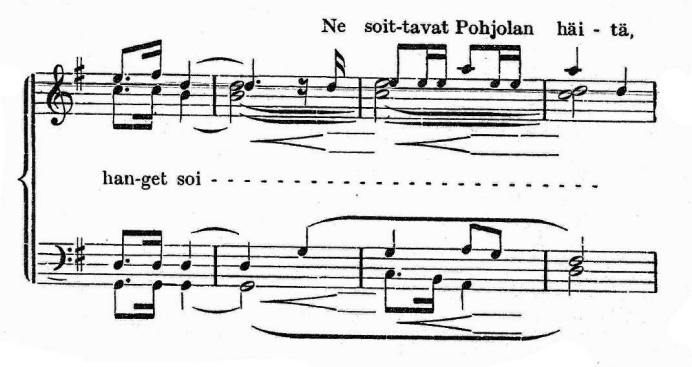

One printed system, the reference beside what homr read off it. The reference is the song's cleaned score imploded back to the printed two-staff shape, so it says what the page says. Codes like HS -s1-1042p7 name a case and do not renumber when others are fixed.

The parse itself, engraved — not the detection the tables below check. The MusicXML is beside this page as hanget-soi-homr.musicxml.
The page against homr's own output. This is the half a fixture cannot see: a fixture failure is about the picture and says nothing about what became of the note. 1 notehead(s) are written in the wrong voice.
| where | the page | homr's output | |
|---|---|---|---|
| bar 1, staff 1, beat 0 | E5 · voice 1 | E5 · voice 1 | the voice the page prints |
| bar 1, staff 1, beat 0 | C5 · voice 2 | C5 · voice 2 | the voice the page prints |
| bar 1, staff 1, beat 3 | F5 · voice 1 | F5 · voice 1 | the voice the page prints |
| bar 1, staff 1, beat 3 | C5 · voice 2 | C5 · voice 2 | the voice the page prints |
| bar 1, staff 1, beat 4 | D5 · voice 1 | D5 · voice 1 | the voice the page prints |
| bar 1, staff 1, beat 4 | B4 · voice 2 | B4 · voice 2 | the voice the page prints |
| bar 1, staff 2, beat 0 | D3 · voice 1 | D3 · voice 1 | the voice the page prints |
| bar 1, staff 2, beat 0 | G2 · voice 2 | G2 · voice 2 | the voice the page prints |
| bar 1, staff 2, beat 3 | D3 · voice 1 | D3 · voice 1 | the voice the page prints |
| bar 1, staff 2, beat 3 | G2 · voice 2 | G2 · voice 2 | the voice the page prints |
| bar 1, staff 2, beat 4 | D3 · voice 1 | D3 · voice 1 | the voice the page prints |
| bar 1, staff 2, beat 4 | G2 · voice 2 | G2 · voice 2 | the voice the page prints |
| bar 2, staff 1, beat 0 | D5 · both voices | D5 | a unison — one head, both parts |
| bar 2, staff 1, beat 0 | B4 · voice 2 | B4 · voice 2 | the voice the page prints |
| bar 2, staff 1, beat 7 | 1 notehead(s) on the page, 0 in homr's output here | ||
| bar 2, staff 2, beat 0 | D3 · voice 1 | D3 · voice 1 | the voice the page prints |
| bar 2, staff 2, beat 0 | G2 · voice 2 | G2 · voice 2 | the voice the page prints |
| bar 2, staff 2, beat 4 | G3 · voice 1 | G3 · voice 1 | the voice the page prints |
| bar 3, staff 1, beat 0 | E5 · both voices | E5 | a unison — one head, both parts |
| bar 3, staff 1, beat 0 | C5 · voice 2 | C5 · voice 2 | the voice the page prints |
| bar 3, staff 1, beat 2 | 1 notehead(s) on the page, 0 in homr's output here | ||
| bar 3, staff 1, beat 3 | E5 · voice 1 | E5 · voice 1 | the voice the page prints |
| bar 3, staff 1, beat 4 | A5 · position 11 | E5 · position 8 | a different note |
| bar 3, staff 1, beat 6 | E5 · voice 1 | E5 · voice 1 | the voice the page prints |
| bar 3, staff 1, beat 7 | E5 · voice 1 | E5 · voice 1 | the voice the page prints |
| bar 3, staff 2, beat 0 | G3 · voice 1 | G3 · voice 1 | the voice the page prints |
| bar 3, staff 2, beat 0 | C3 · voice 2 | C3 · voice 2 | the voice the page prints |
| bar 3, staff 2, beat 3 | 1 notehead(s) on the page, 0 in homr's output here | ||
| bar 3, staff 2, beat 4 | 2 notehead(s) on the page, 1 in homr's output here | ||
| bar 3, staff 2, beat 6 | G3 · voice 1 | G3 · voice 1 | the voice the page prints |
| bar 4, staff 1, beat 0 | A5 · voice 1 | A5 · voice 1 | the voice the page prints |
| bar 4, staff 1, beat 0 | D5 · voice 2 | D5 · voice 2 | the voice the page prints |
| bar 4, staff 1, beat 0 | C5 · voice 2 | C5 · voice 2 | the voice the page prints |
| bar 4, staff 1, beat 4 | D5 · voice 1 | D5 · voice 1 | the voice the page prints |
| bar 4, staff 2, beat 0 | F3 · voice 1 | F3 · voice 1 | the voice the page prints |
| bar 4, staff 2, beat 0 | D3 · voice 2 | D3 · voice 2 | the voice the page prints |
The layer the fixture tests: noteheads and stems found in the picture. This is not what homr writes, and the two can differ in both directions — a note absent here can still reach the output (in the wrong voice, having no stem to place it), and a head detected a step off the page can still be written at the right pitch, because the pitch is read from the image by the transformer rather than taken from this geometry.
22 noteheads on the page, 22 found by homr.
| moment | the page | page: position, stem | homr: pitch, position, stem | |
|---|---|---|---|---|
| 1 | m1 E5 | 8 up v1 | E5 · 8 up | agrees |
| 1 | m1 C5 | 6 down v2 | C5 · 6 down | agrees |
| 2 | m1 F5 | 9 up v1 | F5 · 9 up | agrees |
| 2 | m1 C5 | 6 down v2 | C5 · 6 down | agrees |
| 3 | m1 D5 | 7 up v1 | D5 · 7 up | agrees |
| 3 | m1 B4 | 5 down v2 | B4 · 5 down | agrees |
| 4 | m2 D5 | 7 up v1 | D5 · 7 up | agrees |
| 4 | m2 D5 | 7 down v2 | D5 · 7 down | agrees |
| 4 | m2 B4 | 5 down v2 | B4 · 5 down | agrees |
| 5 | m2 D5 | 7 up v1 | E5 · 8 up | detected a step off the page |
| 6 | m3 E5 | 8 up v1 | E5 · 8 up | agrees |
| 6 | m3 E5 | 8 down v2 | E5 · 8 down | agrees |
| 6 | m3 C5 | 6 down v2 | C5 · 6 down | agrees |
| 7 | m3 E5 | 8 up v1 | E5 · 8 up | agrees |
| 8 | m3 E5 | 8 up v1 | E5 · 8 up | agrees |
| 9 | m3 A5 | 11 up v1 | A5 · 11 up | agrees |
| 10 | m3 E5 | 8 up v1 | E5 · 8 up | agrees |
| 11 | m3 E5 | 8 up v1 | E5 · 8 up | agrees |
| 12 | m4 C5 | 6 down v2 | C5 · 6 down | agrees |
| 12 | m4 A5 | 11 up v1 | A5 · 11 up | agrees |
| 12 | m4 D5 | 7 down v2 | D5 · 7 down | agrees |
| 13 | m4 D5 | 7 up v1 | D5 · 7 up | agrees |
17 noteheads on the page, 17 found by homr.
| moment | the page | page: position, stem | homr: pitch, position, stem | |
|---|---|---|---|---|
| 1 | m1 D3 | 5 up v1 | D3 · 5 up | agrees |
| 1 | m1 G2 | 1 down v2 | G2 · 1 down | agrees |
| 2 | m1 D3 | 5 up v1 | D3 · 5 up | agrees |
| 2 | m1 G2 | 1 down v2 | G2 · 1 down | agrees |
| 3 | m1 D3 | 5 up v1 | D3 · 5 up | agrees |
| 3 | m1 G2 | 1 down v2 | G2 · 1 down | agrees |
| 4 | m2 D3 | 5 up v1 | D3 · 5 up | agrees |
| 4 | m2 G2 | 1 down v2 | G2 · 1 down | agrees |
| 5 | m2 G3 | 8 up v1 | G3 · 8 up | agrees |
| 6 | m3 G3 | 8 up v1 | G3 · 8 up | agrees |
| 6 | m3 C3 | 4 down v2 | C3 · 4 down | agrees |
| 7 | m3 B2 | 3 down v2 | B2 · 3 down | agrees |
| 8 | m3 A3 | 9 up v1 | A3 · 9 up | agrees |
| 8 | m3 A2 | 2 down v2 | A2 · 2 down | agrees |
| 9 | m3 G3 | 8 up v1 | G3 · 8 up | agrees |
| 10 | m4 F3 | 7 up v1 | F3 · 7 up | agrees |
| 10 | m4 D3 | 5 down v2 | D3 · 5 down | agrees |